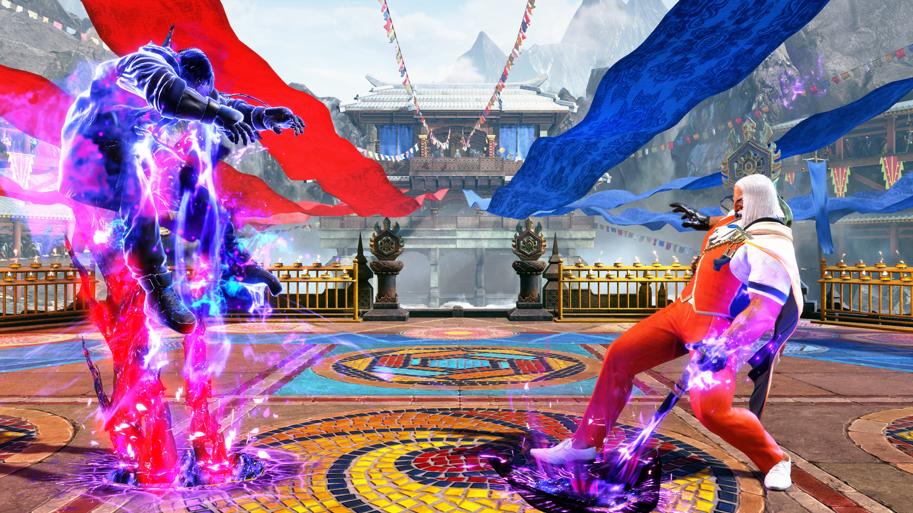
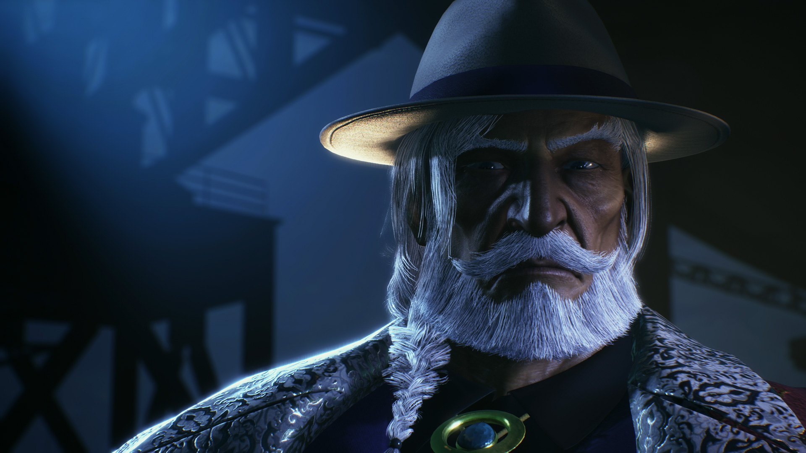
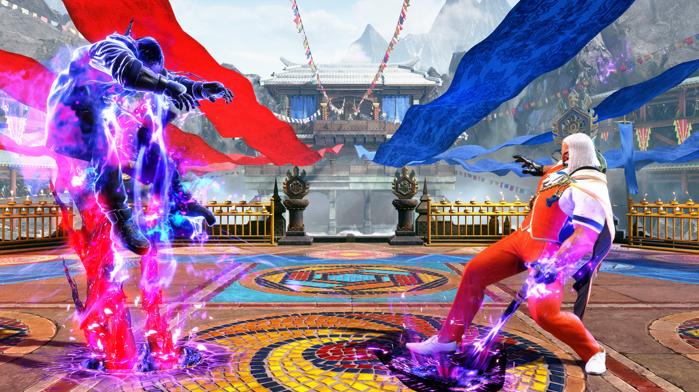
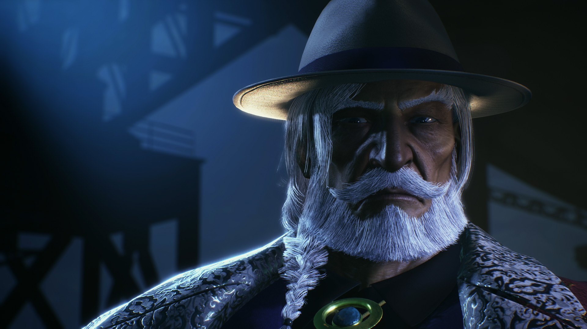

История
История начинается с представления развивающейся страны и предстоящего турнира по боевым искусствам, который, как предполагается, должен поддержать её на плаву. Сюжет персонажа объясняет причины проведения этого соревнования и его значимость для региона.
JP — умный и хитрый человек, но ему не хватило дальновидности, чтобы предугадать, что его вызовут на бой величайшие бойцы планеты. Несмотря на осознание своей роли и всей нелогичности своего плана, он решает испробовать стратегию, аналогичную тактике Bison, и понимает, что тоже рождён для мирового господства.
Однако, столкнувшись с реальностью и силой своих противников, JP осознаёт масштаб своей самоуверенности. Его история подчёркивает, как амбиции могут затмить разум, но также показывает его готовность играть по-крупному, даже если шансы против него.
Стиль боя
Изысканный бывший финансист Shadaloo вальяжно выходит на поле боя как медленный, но мощный зонер. В отличие от других зонеров, которые фокусируются на быстрых огненных шарах или досаждении противникам с помощью длинных и быстрых нормалей, JP предпочитает подавлять оппонентов градом психической энергии. JP стремится заставить своих противников стоять на месте, ведь именно тогда, когда они чувствуют безысходность, он может подготовить коварные миксы.
Основные спецприемы JP — это Torbalan и Triglav. Первый — медленный, но большой огненный шар, который можно выпустить по одной из трех траекторий движения, а второй — почти мгновенная атака-шип, способная появиться практически в любой части экрана. Хотя Torbalan медленный, у него множество применений: один из вариантов наносит удар внизу, а другой действует как оверхед, создавая миксы. Triglav служит одновременно сдерживающим фактором и анти-воздушной атакой, ловя тех, кто пытается приблизиться к JP, и карая неудачные прыжки. С помощью этих двух приемов JP оттесняет противников к углу и продолжает оказывать давление на всю ширину экрана. После того как противник примет комбо или простоит достаточно долго, JP может активировать свой фирменный Departure — портал, который либо выпускает отслеживающий шип, либо становится точкой для телепортации самого JP.
Несмотря на сильную зону, любой хороший противник рано или поздно преодолеет её. Когда они окажутся в зоне досягаемости, JP предпочитает использовать свои среднедистанционные пики, чтобы отбрасывать их назад. 5HP — отличный инструмент для чтения, который можно отменять в спецприемы, 2HP — надежный анти-воздушный прием, а 2MK — фантастический пок. Любое успешное попадание JP может мгновенно отменить в Drive Rush комбо, отправляя противника на противоположный конец экрана и позволяя ему возобновить зону. Противники, делающие слишком продуманные действия, рискуют нарваться на Amnesia — контратаку, которая не наносит урона, но приклеивает к противнику временную бомбу. У JP огромный набор инструментов для миксов: его игра бросками очень сильна и высоко вознаграждена, а при наличии установленного Departure он может выполнять мощные миксы верха/низа. Его супертехника уровня 2 — невероятный инструмент для создания непробиваемых миксов, ресетов и даже полноценных неотразимых атак, чтобы растопить шкалу здоровья. Однако вся эта мощь имеет свою цену: крайне слабую мобильность JP. В отличие от других зонеров, JP обладает ужасными показателями передвижения и должен полагаться на Drive Rush для любой значительной мобильности. Если вам нравится подавляющая атакующая мощь без необходимости "замарать руки", нет лучшего выбора, чем этот мастер Psycho Power.
Изображения
 


